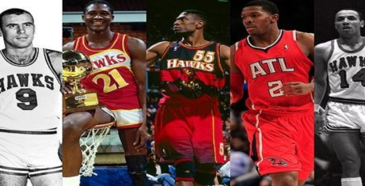
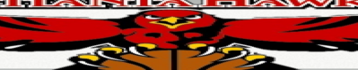

亞特蘭大老鷹背景
亞特蘭大老鷹的英文隊名為Atlanta Hawks，老鷹隊之名象徵著速度和進攻，球隊成立於1946年，在1949年加入NBA，是NBA的元老之一。目前所在城市是美國喬治亞州亞特蘭大市(Atlanta, Georgia)，主場為飛利浦球場(Philips Arena)。球隊最初名為「三城黑鷹隊」，1951年主場遷移到密爾瓦基市，改名「密爾瓦基鷹隊」，直到1968年主場移到亞特蘭大後才改成現在的亞特蘭大老鷹隊。
亞特蘭大老鷹的英文隊名為Atlanta Hawks，老鷹隊之名象徵著速度和進攻，球隊成立於1946年，在1949年加入NBA，是NBA的元老之一。目前所在城市是美國喬治亞州亞特蘭大市(Atlanta, Georgia)，主場為飛利浦球場(Philips Arena)。球隊最初名為「三城黑鷹隊」，1951年主場遷移到密爾瓦基市，改名「密爾瓦基鷹隊」，直到1968年主場移到亞特蘭大後才改成現在的亞特蘭大老鷹隊。